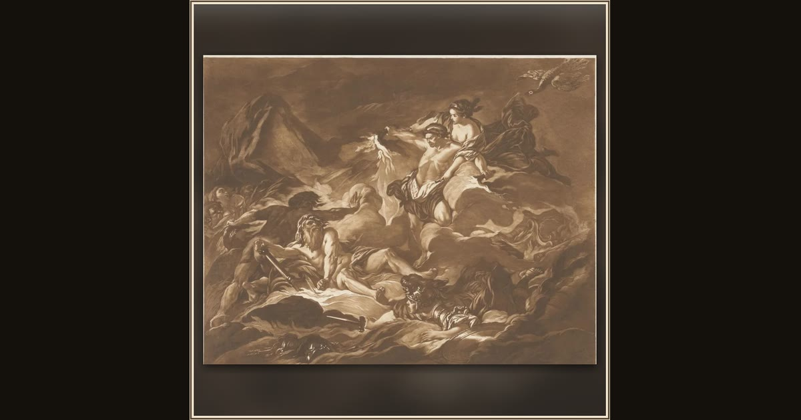

Juno en Vulcanus redden Achilles van de riviergoden Scamander (Xanthe) en Simoïs
Philippe Louis Parizeau, after painting by Jean Baptiste Henri Deshays · 1770 · rijksmuseum
Juno and Vulcan appear amid the river gods as Achilles struggles in the flood; Hera calls on Hephaestus when Xanthus threatens to overwhelm him (21.328–333). Explore its place in Homer's Iliad, Book XXI, line 330.